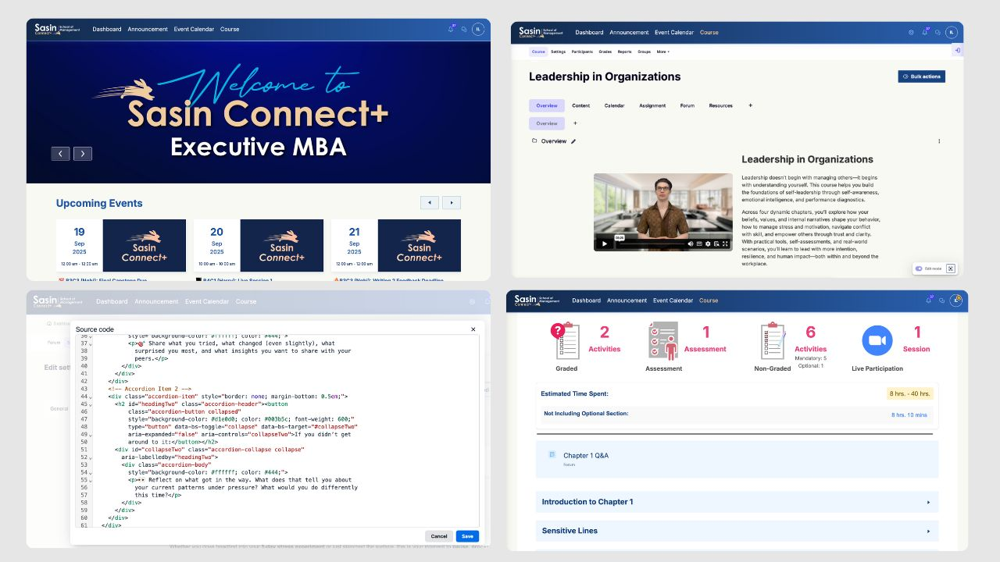
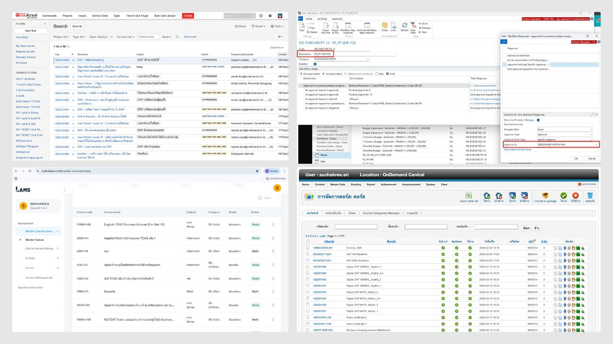
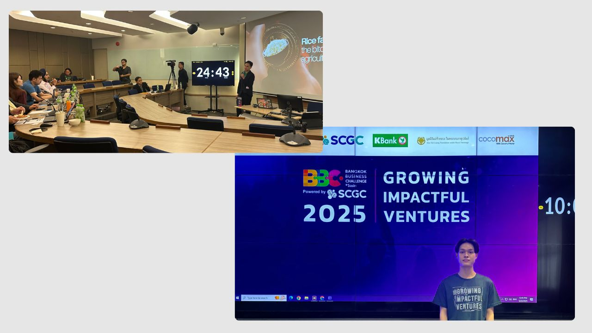
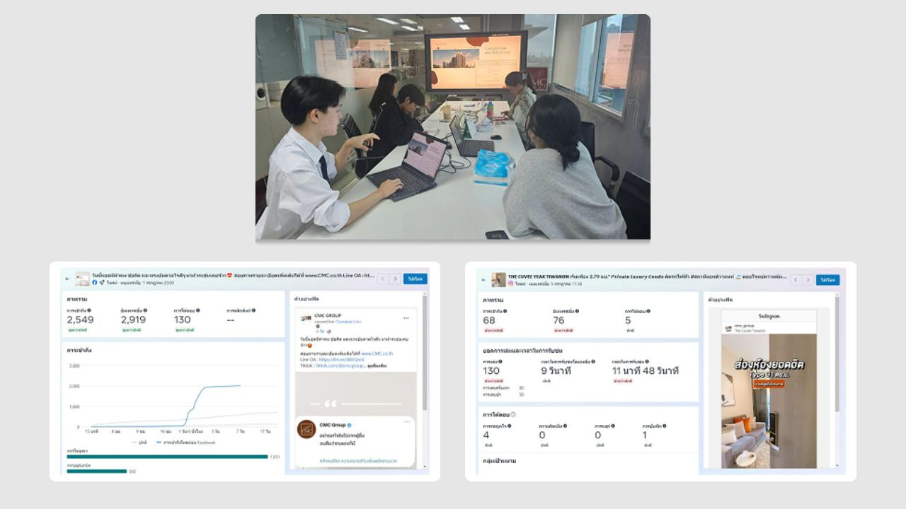

A Digital Service Innovation graduate now working as a Digital Solution Specialist — helping teams modernize business processes and coordinating with external partners on enterprise digital transformation.
Drove the organization's digital transformation by leading the transition from manual, paper-based workflows to a structured digital process through the implementation of a Workflow Management System, laying the foundation for scalable and auditable operations. Collaborated closely with internal stakeholders and Vbix, an external transformation partner, to map existing operations into clear process flows — enabling seamless system integration with minimal disruption to day-to-day business continuity. Directed the intake and analysis of business requirements across departments, translating them into tailored, purpose-built workflows on Kissflow that improved process visibility and reduced manual bottlenecks. Additionally, distilled emerging AI trends into practical, actionable insights for the Business Development team, helping bridge the gap between technical innovation and business strategy.
Managed end-to-end service requests across a multi-platform enterprise ecosystem — including Microsoft Dynamics NAV, Kissflow, Tableau, Jira, and Lark — in a high-demand environment requiring both technical precision and cross-team coordination. Served as the key liaison between business users and technical teams, translating operational needs into actionable solutions and ensuring requests were resolved efficiently without compromising system integrity. Leveraged Kissflow's low-code capabilities to streamline workflows and strengthen access control, reducing manual overhead and improving process governance. Additionally, cleaned and validated datasets in Tableau prior to handoff to the Data team, ensuring downstream analysis was built on accurate, reliable data.
Managed the performance and usability of Sasin Connect+, ensuring content accuracy and a seamless end-to-end learning experience for a diverse base of executive learners. Conducted learner interviews to uncover pain points and translated those insights into concrete platform improvements, bridging the gap between user feedback and actual implementation. Structured accessible, well-organized course pages in Moodle using HTML to improve navigation and reduce friction across the learning journey. Additionally, designed interactive modules with Articulate 360 to strengthen engagement and knowledge retention — combining instructional design principles with hands-on development to create a more effective learning experience.
Led end-to-end execution of seasonal campaigns for residential projects, from initial concept development through final delivery. Shaped creative direction in close collaboration with the creative team, and owned on-site production across photography, videography, and event execution — ensuring every touchpoint reflected a consistent brand experience. Additionally, refined website content and UI layout to create a more seamless, intuitive buyer journey, bridging creative storytelling with practical usability improvements.

Led the end-to-end migration of course materials into Moodle LMS to support MBA/EMBA programs, ensuring content structure remained consistent and accessible across a diverse cohort of executive learners. Designed and built interactive H5P learning activities to transform static content into engaging, self-paced exercises, and applied custom HTML/CSS to refine page layout, navigation, and overall usability. Beyond the technical execution, this project deepened my understanding of instructional design principles — learning how small UX decisions in an LMS directly affect learner engagement and completion rates, and how to balance visual polish with platform performance constraints.

Served as a key point of contact for triaging cross-platform issues, systematically diagnosing root causes within Microsoft Dynamics NAV to minimize disruption to daily operations. Conducted audits of approval workflows to identify bottlenecks and inconsistencies, then worked to strengthen process reliability across departments. Additionally, produced data reports tracking course progress and completion to support data-informed decision-making for program administrators. This role sharpened my systems-thinking mindset — I learned to approach problems methodically, trace issues back to their source rather than patching symptoms, and communicate technical findings in a way that non-technical stakeholders could act on.

Managed the end-to-end scoring operations for a nationwide competition attended by senior executives, a role that required precision under real-time pressure. Validated judges' evaluations on the spot, cross-checked data for accuracy, and ensured seamless synchronization of scores across systems and stakeholders throughout the live event. Operating in front of a high-profile audience with zero margin for error taught me how to stay composed under pressure, anticipate points of failure before they happen, and build lightweight verification processes that maintain both speed and accuracy — a skill set directly transferable to any operations-critical role.

Contributed to the design and execution of resident engagement campaigns for real estate projects, developing incentive-based mechanics intended to drive participation and deepen long-term community loyalty. Worked closely with cross-functional teams to translate campaign concepts into actionable activities that resonated with residents' everyday lives. This experience gave me hands-on exposure to behavioral-design thinking — understanding what genuinely motivates people to engage (versus what looks good on paper), and how thoughtful incentive structures can turn one-off participation into lasting community relationships.